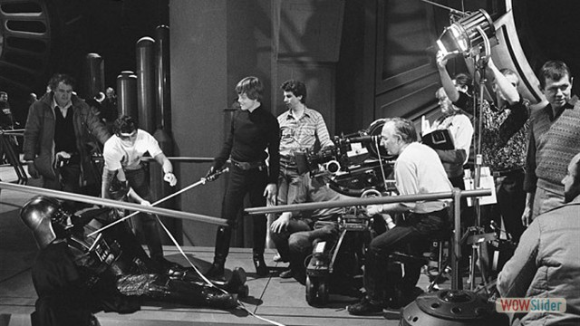
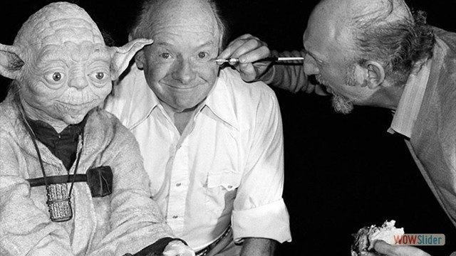
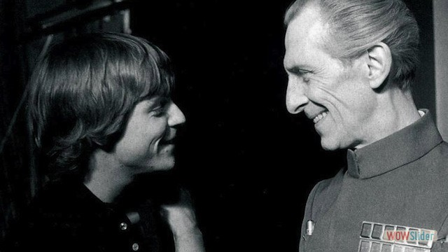
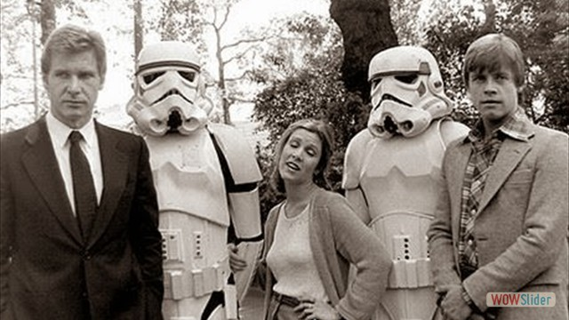

- 


- 

- 
 out of costume")
- 
 1
1 2
2 6
6 7
7 9
9 10
10wowslider.com by WOWSlider.com v8.6
HTML code for the slider C:/Users/user/Documents/College/LCB/Year 1 (2nd Sem)/CO4027 (Web-Based Technologies)/CO4027 Assignment/CO4027 - Assignmentv4 (Star Wars Website)/wowslider.html
Click here for the detailed info.